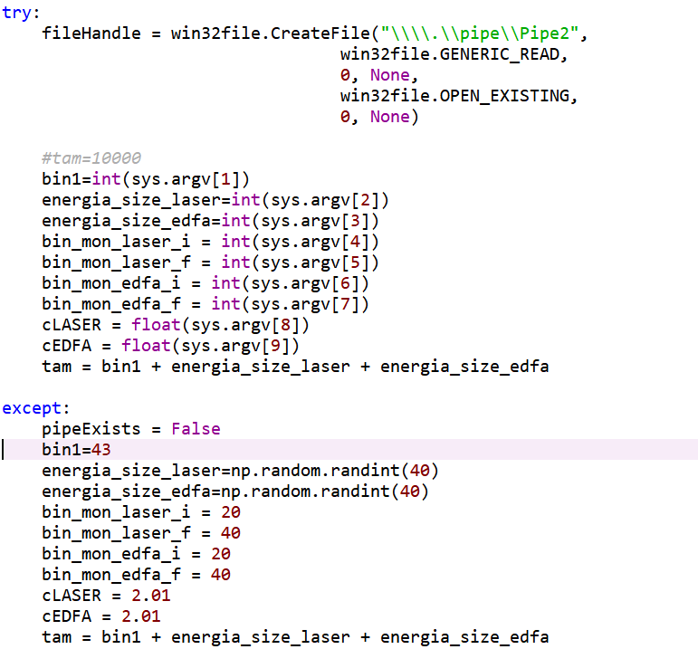
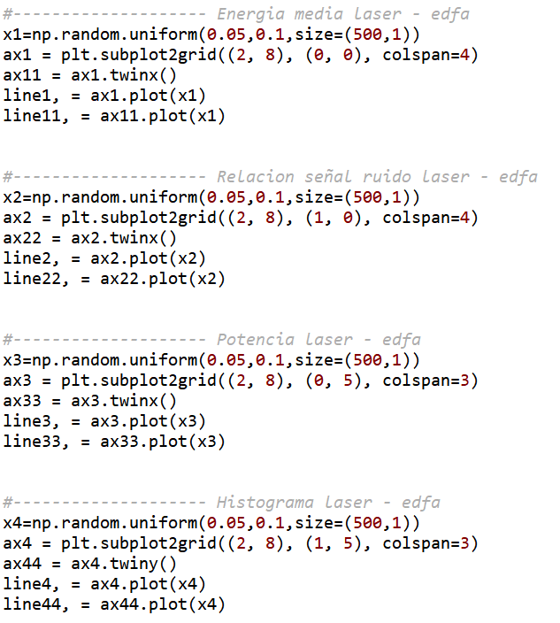
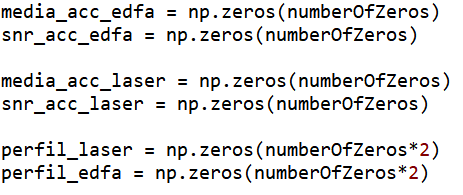
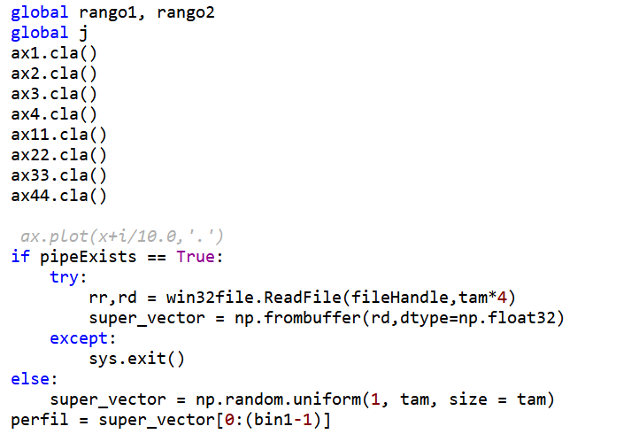
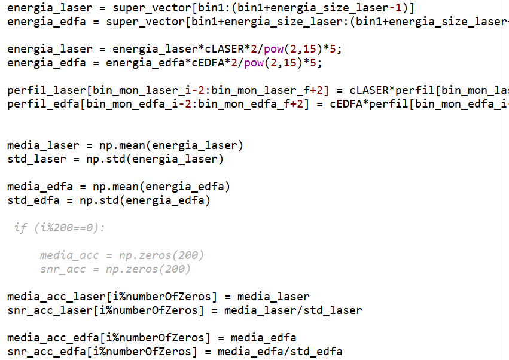
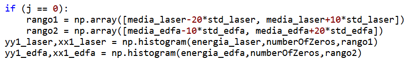
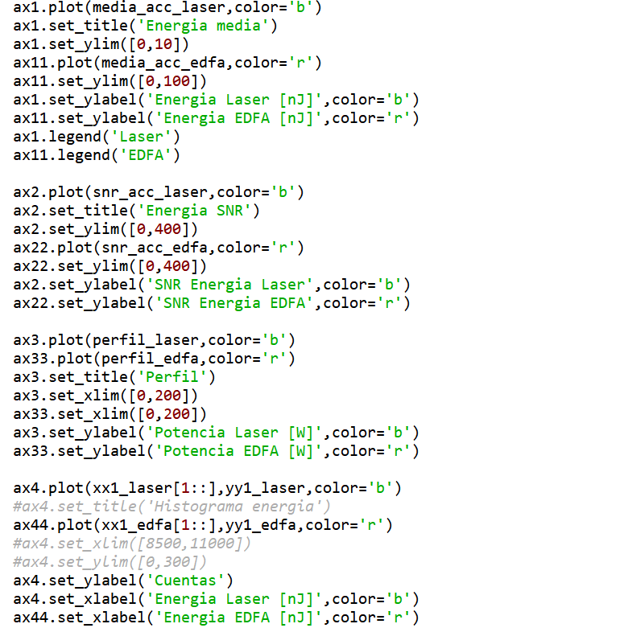
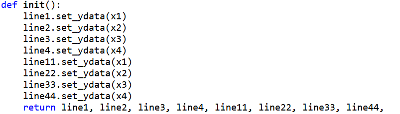

Impar.py¶
Se identificaron dos funciones dentro del mismo y un pequeño bloque de código pseudo-independiente. El bloque pseudo-independiente lo que hace es: - Primero crea un pipe (una tubería de lectura-escritura de datos mediante terminal de Windows) de lectura, el cual obtendrá los datos del láser y del EDFA mediante los datos que le llegan por el bash de Windows.
{kind=link}
- Como se puede observar, el código fue modificado para que intente abrir el pipe, en caso de no poder,
- crea valores aleatorios (los puestos no tienen mucho que ver, son de prueba, pero a su vez están correlacionados entre sí), para poder hacer un testeo sin un equipo de medición.
Seguido a esto, crea las figuras correspondientes para la visualización de las señales de energía y relación señal-ruido, tanto del láser como del EDFA.
Subsiguiente a esto, se crean matrices de la forma 500x1 para el seteo de datos a leer y mostrar.
{kind=link}
Se observa la creación de los gráficos correspondientes y la creación de las matrices, el tamaño de ellas aún no se sabe el por qué de esos tamaños.
Luego se crean las variables correspondientes para el cálculo de la energía media y la relación señal-ruido tanto del láser como del EDFA. Se setean estas variables con parámetros aleatorios para una primera visualización y creación de los gráficos.
{kind=link}
- El tamaño de estos vectores todavía no fue identificado, pero por lo que se observó al hacer testeos con distintos valores,
- no cambia ni afecta en el sistema, pero aún así se dejó el tamaño de 200 (ya estaba definido así) y como se usaba en reiteradas ocasiones, se unificó a una variable.
Luego se identifica la primer función, animate. Esta función como particular, lo que hace es actualizar los gráficos con los datos que le llegan por el pipe mediante la lectura.
Primero lee los datos que le llegan del láser y del EDFA por el pipe.
Luego interpreta esos datos (que le llegan como string) y los transforma en enteros y los pasa a un vector.
{kind=link}
Se observa cómo primero limpia los gráficos para una ‘actualización’, luego, se observa la modificación al código la cual intenta leer los datos del pipe, y, si por algún motivo no puede (que sería cuando se cierra el programa) corta el programa. A su vez, si desde el inicio no detecta un pipe, simula datos aleatorios para pruebas.
Hace los cálculos de las desviaciones y las medias.
A partir de esos datos calcula la relación señal-ruido. - Setea el rango para hacer un histograma de las energías del láser y del EDFA.
{kind=link}
En estas líneas de código se observan los cálculos de las energías medias del láser y del edfa, a su vez calculándose sus relaciones señal-ruído.
{kind=link}
Aquí se observa la creación del histograma para cada equipo (láser y edfa) en un rango para cada uno que se determina una única vez en el código. Luego grafica os mismos.
{kind=link}
Aquí en cada gráfico está discriminado lo que se está ploteando, aún falta determinar de dónde o por qué se utilizan esos números. La siguiente función identificada es la función init, que lo único que hace es crear los gráficos iniciales para la muestra de datos, a su vez seteando los parámetros iniciales.
{kind=link}
En esta función se le pasan los parámetros de figura donde se grafica, la animación, la función o parámetros iniciales, el intervalo de actualización y el blitting.